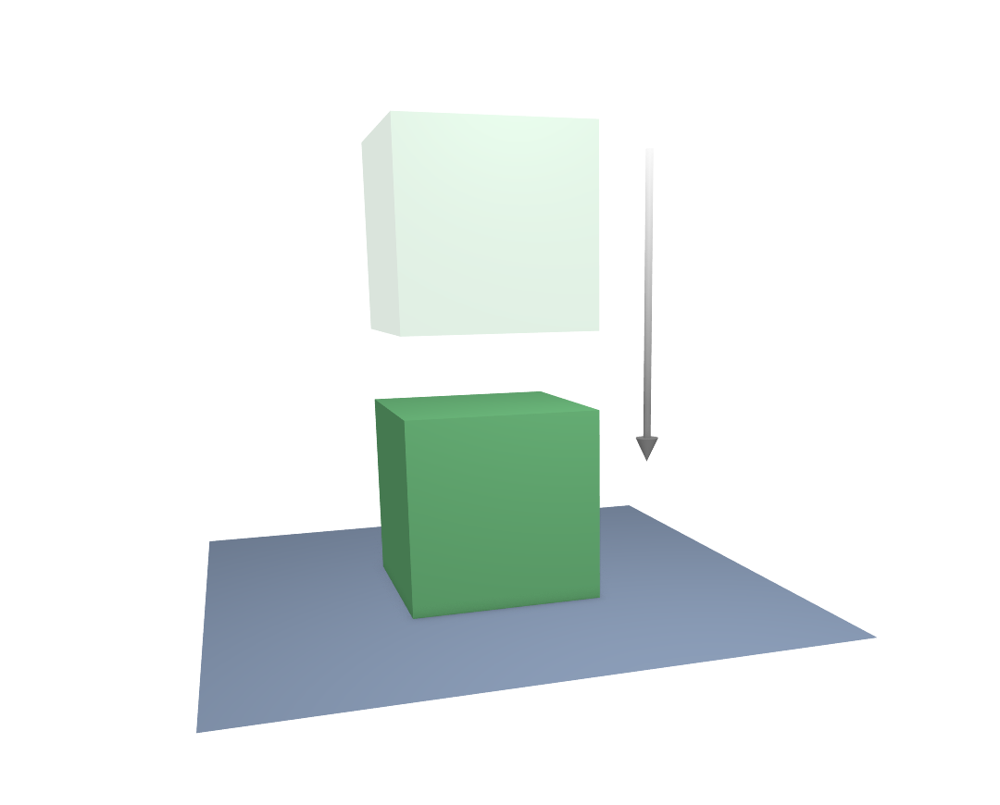
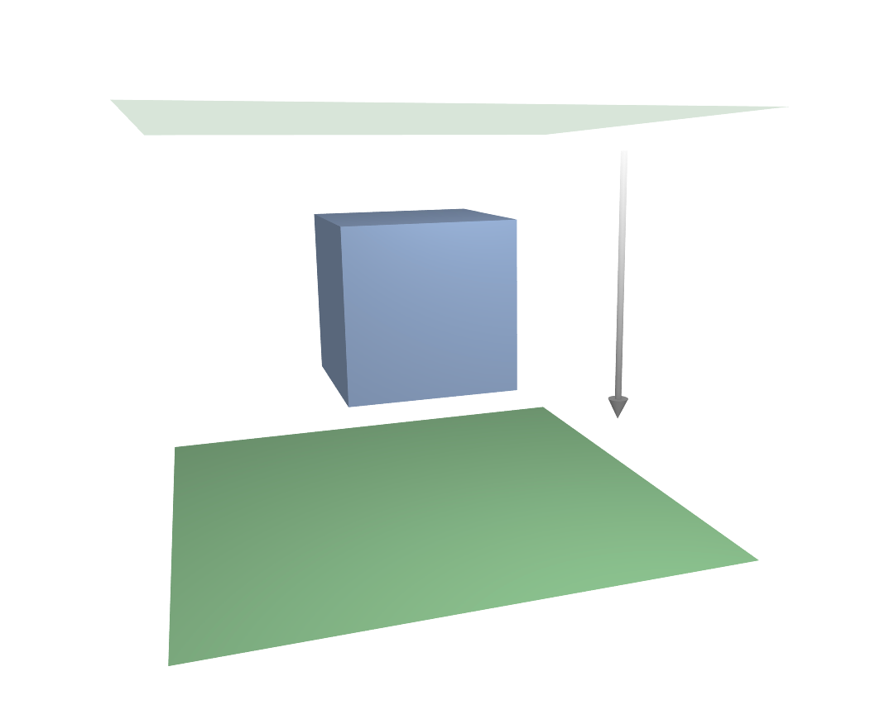

碰撞¶
你可能会用到两种碰撞类型：不同物体对象碰撞和自碰撞。我们首先需要明确一件事 -- 碰撞运算的主要对象是软体的顶点。因此，如果顶点太少，碰撞也少。其次，你可以使用边和面来改善碰撞运算的效果。
和其他物体的碰撞¶
要使软体与其他物体碰撞，需要几个先决条件：
如果指定了 碰撞集合， 物体必须在集合内。
碰撞物体必须是网格对象。
碰撞物体需要在 物理 选项卡激活 碰撞体。碰撞对象也可以是软体。
示例¶
一个立方体软体与平面碰撞(如图 软体立方体与平面碰撞。)模拟良好，但是本该与立方体发生碰撞的软体平面，却径直落下，穿过了立方体(如图 软体平面与立方体碰撞，没有发生任何相互作用。)。

软体立方体与平面碰撞。¶ |

软体平面与立方体碰撞，没有发生任何相互作用。¶ |
为什么会出现这种情况呢？因为当平面被重力捕获下降时，默认的计算方式仅仅会检查软体平面的四个顶点是否与立方体发生了碰撞。你确实可以激活 面碰撞 (在 软体边 面板)来使软体平面和碰撞体的面发生碰撞，但是这类计算会花费更多时间。
让我们再仔细研究一下碰撞计算的问题，这样你就能知道如何优化它。
碰撞计算¶
默认的软体模拟是基于每个顶点进行的。如果软体的顶点没有与碰撞对象发生碰撞，那么这两个物体将不会存在相互作用。
在下面的视频中，演示了顶点与平面碰撞的模型。如果一个顶点穿透了 外部 与 内部 之间的区域，那么它会受到一个朝向平面法线方向的斥力的作用。顶点最终的结束位置取决于它受到的力。在示例中(下面视频中左侧第一个顶点)，重力与平面的排斥力平衡。顶点被碰撞区域排斥出去的速度受到 软体解算器设置 中 阻塞 参数的影响。
See also
下载此 blend文件。
现在让我们看看如果使顶点更重、以更快的速度移动时，会发生什么。上面的视频中，顶点以不同的速度移动。最右侧的两个顶点(第五个和第六个)运动的太快以至于直接穿过了碰撞区域(这是默认解算器精度的问题，我们后面可以解决)。你可以看到第四个顶点的速度也很快，并且它也更重，导致它突破到了内部区域。第三个顶点碰撞正确。
你可以在 软体边 面板中设置 碰撞面 和 碰撞边 这两个选项，让碰撞计算时考虑边线，甚至包括面。这样，碰撞会以不同的方式计算。它会考虑边和面是否与碰撞对象产生相交，而非使用碰撞区域。
良好的碰撞¶
如果你设置的碰撞表现不太好，你可以尝试下面几个方法：
软体对象必须比碰撞体对象有更多的细分数。在软体对象上最有可能发生碰撞的区域增加环切。
检查面法线朝向。
如果碰撞体有尖刺，它可能会穿透软体。
解算器的精度必须和软体顶点的速度相匹配。降低 错误限额 参数值，小心地增加 最小步数。
外部 和 内部 应该足够大，但是相对的面不应该重叠，或力量方向相反。
如果使用较强力场，使用大区域。
如果在排斥顶点时遇到问题，请将 阻塞 设置为足够高的值(必要时一直向上加)。
碰撞面很难控制，而且需要很长的计算时间。尽量不要使用。
通常最好创建一个简化的网格作为碰撞对象，但是，如果使用动画网格，这可能会比较困难。